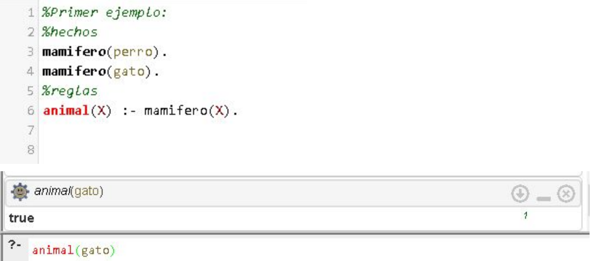

Símbolos
Operadores
Los operadores de Prolog están divididos en dos clases: aritméticos y relacionales
Aritméticos
Todas las versiones de Prolog soportan los siguientes operadores aritméticos, listados en el orden de prioridad de ejecución.
- + --> SUMA
- - --> RESTA
- * --> MULTIPLICACIÓN
- / --> DIVISIÓN
- // --> DIVISION ENTERA
- MOD --> RESIDUO
- ^ --> POTENCIA
Los paréntesis se pueden utilizar para dar preferencia de ejecución en una expresión compuesta. Prolog utiliza la precedencia de operadores con la regla de la mano izquierda.
A continuación se muestran algunas operaciones más complejas que PROLOG provee:
- Operación: Sqrt(X)Descripción: Calcula la raíz cuadrada de la variable
- Operación: log(X)Descripción: Calcula el logaritmo de X
- Operación: ln(X)Descripción: Calcula el logaritmo natural de X
- Operación: abs(B)Descripción: Regresa el valor absoluto de B
- Operación: sin(T)Descripción: Seno de T
- Operación: cos(A)Descripción: Coseno de A
- Operación: tan(C)Descripción: Tangente de C
Relacionales
Prolog soporta los siguientes operadores relacionales:
- = --> IGUAL QUE
- > --> MAYOR QUE
- >= --> MAYOR O IGUAL QUE
- >= --> MENOR O IGUAL QUE
- <> --> DESIGUAL QUE
- =/= --> DIFERENTE QUE
- is --> EVALUADOR DE EXPRESIÓN
- seed --> GENERADOR DE NÚMEROS ALEATORIOS
Cuando dos objetos que son símbolos o cadenas de caracteres son comparados, los caracteres son convertidos a su equivalente ASCII. El valor de cada carácter es examinado a partir del operador relacional, de izquierda a derecha.
Sintaxis
- Mayúsculas [A-Z]
- Minúsculas [a-z]
- Dígitos [0-9]
- Caracteres especiales: + - * / ^ <> ~ : ; . _ ? \ ( ) [ ]
- Átomo
- Números
- Variables
- Estructuras
La sintaxis del lenguaje de Prolog es usado habitualmente en el campo de la Inteligencia Artificial.
Esqueleto de los programas
Un programa en prolog está compuesto por cláusulas. Las cláusulas son la base del programa, están conformadas por hechos y reglas . El conjunto de hechos y reglas forman el conocimiento base del programa, mediante el cual podremos realizar consultas e inferir datos.
Hechos: Un hecho, en PROLOG, es una relación entre objetos. Para nosotros es una afirmación directa entre uno o varios objetos, donde debemos tomar en cuenta la siguiente formato:
Predicado(sujeto(‘,’||sujeto)*)
Ejemplos
le_gusta_a(juan,maria). valioso(oro). tiene(juan,libro). da(juan,libro,maria).
Reglas: Una regla, en PROLOG, es una sentencia condicional. Es decir sin un objeto cumple cierta característica, se obliga a que tenga otra relación y debemos tener en cuenta el siguiente formato:
Conclusión condicional ParteCondicional *condicional : “:-”
Si desea prácticar en este lenguaje, le dejaremos a continuación el IDE de desarrollo de Prolog.
Aplicación a descargar para editar y ejecutar

Paradigma
El lenguaje Prolog pertenece a la Paradigma Declarativo de Programación Lógica.
Ejemplo
A continuación, se muestra un ejemplo básico de un programa escrito en el lenguaje Prolog.
